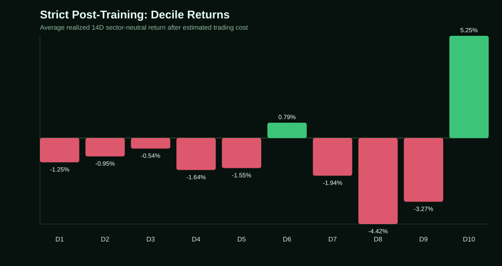
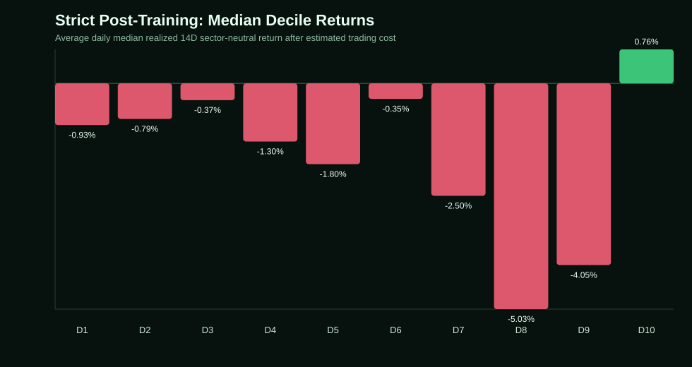
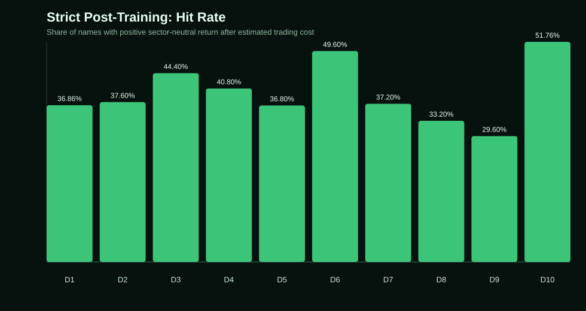
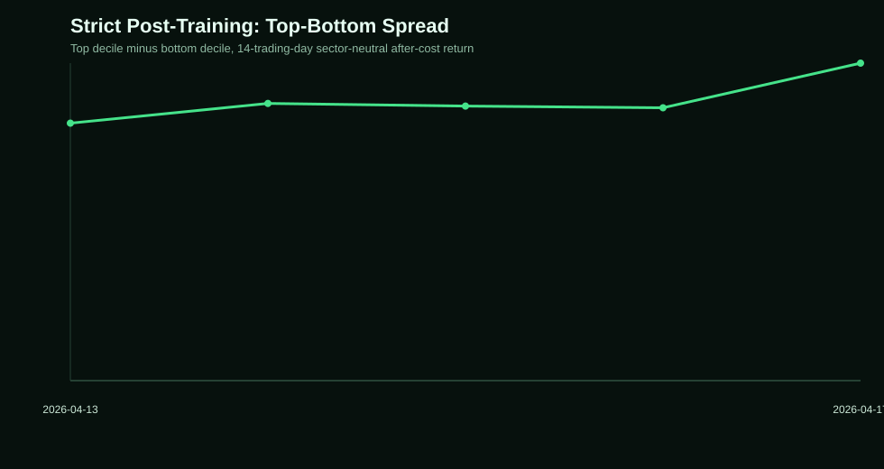
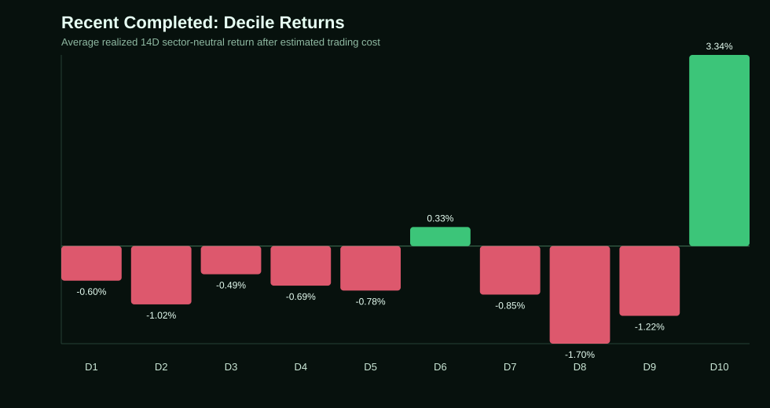
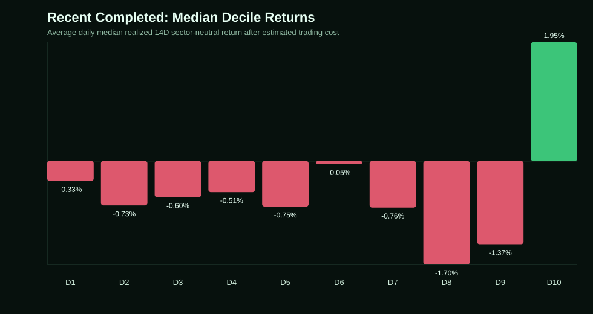
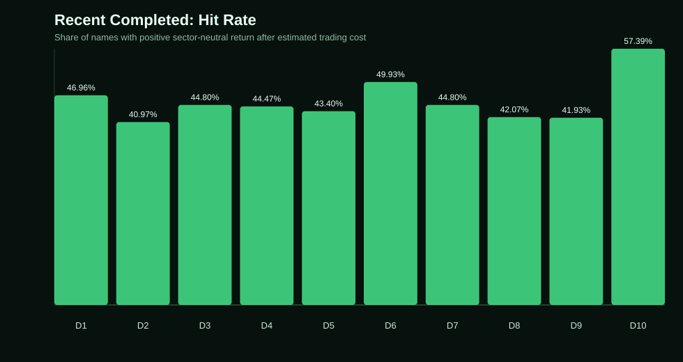
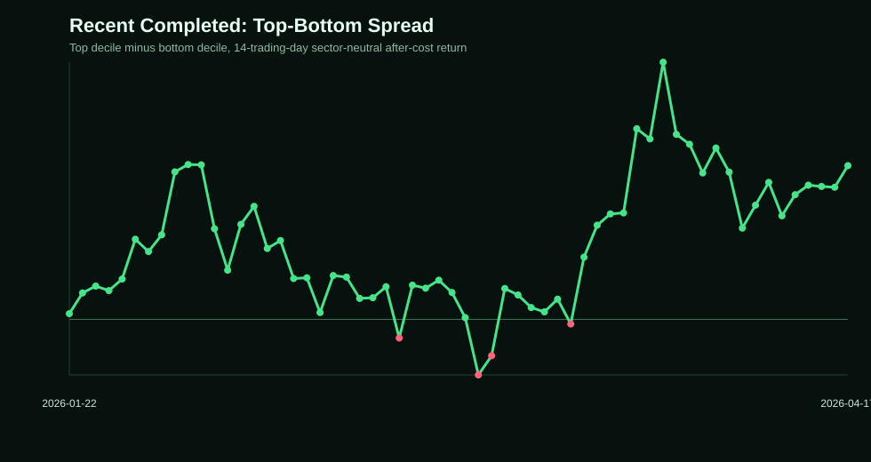
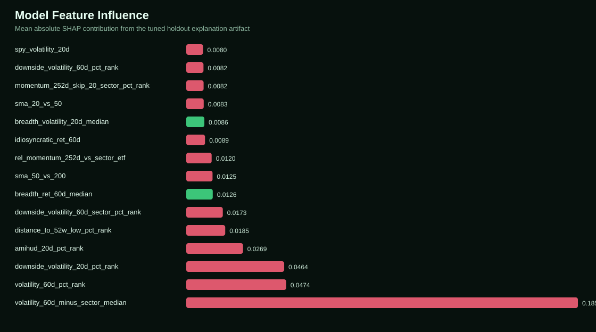

Market Pulse Analysis
Production Model Monitoring
Recent decile backtests for the frozen XGBoost rank model. This report is local-only and is not embedded in the public dashboard.
Strict post-training sample is still too small for a hard model-change call. top decile average positive: pass; top decile median positive: pass; top minus bottom spread positive: pass; median spread positive: pass; hit rate above 52pct: pass; positive spread rate above 70pct: pass
Window
Strict Post-Training
This is the cleanest live-style check because it excludes dates used for training. It may be small until more 14-trading-day outcomes complete.




Decile Summary
| model decile | scoring dates | avg count | avg sector neutral return 14d after cost | avg daily median sector neutral return 14d after cost | avg daily winsorized sector neutral return 14d after cost | avg excess vs spy 14d | avg daily median excess vs spy 14d | hit rate sector neutral after cost | hit rate vs spy | avg top5 positive contribution share |
|---|---|---|---|---|---|---|---|---|---|---|
| 10 | 5 | 51.0000 | 5.25% | 0.76% | 4.86% | 5.56% | 0.06% | 51.76% | 50.59% | 46.79% |
| 9 | 5 | 50.0000 | -3.27% | -4.05% | -3.64% | -3.25% | -5.21% | 29.60% | 32.80% | 71.84% |
| 8 | 5 | 50.0000 | -4.42% | -5.03% | -4.34% | -4.78% | -5.14% | 33.20% | 33.20% | 54.17% |
| 7 | 5 | 50.0000 | -1.94% | -2.50% | -1.94% | -3.10% | -3.89% | 37.20% | 37.20% | 56.64% |
| 6 | 5 | 50.0000 | 0.79% | -0.35% | 0.58% | -1.25% | -2.53% | 49.60% | 39.20% | 48.79% |
| 5 | 5 | 50.0000 | -1.55% | -1.80% | -1.64% | -4.76% | -5.27% | 36.80% | 21.60% | 62.53% |
| 4 | 5 | 50.0000 | -1.64% | -1.30% | -1.75% | -4.96% | -4.41% | 40.80% | 20.00% | 57.62% |
| 3 | 5 | 50.0000 | -0.54% | -0.37% | -0.95% | -3.71% | -4.30% | 44.40% | 16.40% | 67.27% |
| 2 | 5 | 50.0000 | -0.95% | -0.79% | -1.02% | -4.55% | -4.69% | 37.60% | 17.20% | 64.14% |
| 1 | 5 | 51.0000 | -1.25% | -0.93% | -1.17% | -4.93% | -5.23% | 36.86% | 16.47% | 54.26% |
Top Bucket Robustness
| segment | scoring dates | avg count | avg sector neutral return 14d after cost | avg daily median sector neutral return 14d after cost | avg daily winsorized sector neutral return 14d after cost | hit rate sector neutral after cost | avg top5 positive contribution share |
|---|---|---|---|---|---|---|---|
| bottom_decile | 5 | 51.0000 | -1.25% | -0.93% | -1.17% | 36.86% | 54.26% |
| top_25 | 5 | 25.0000 | 5.59% | -0.12% | 5.21% | 50.40% | 74.14% |
| top_50 | 5 | 50.0000 | 5.24% | 0.28% | 4.85% | 51.20% | 47.68% |
| top_decile | 5 | 51.0000 | 5.25% | 0.76% | 4.86% | 51.76% | 46.79% |
Non-Overlapping Cohorts
| offset | periods | start date | end date | avg top sector neutral return 14d after cost | median top sector neutral return 14d after cost | avg top minus bottom sector neutral 14d | positive spread rate |
|---|---|---|---|---|---|---|---|
| 0 | 1 | 2026-04-13 00:00:00 | 2026-04-13 00:00:00 | 4.88% | 4.88% | 5.98% | 100.00% |
| 1 | 1 | 2026-04-14 00:00:00 | 2026-04-14 00:00:00 | 5.57% | 5.57% | 6.43% | 100.00% |
| 2 | 1 | 2026-04-15 00:00:00 | 2026-04-15 00:00:00 | 5.06% | 5.06% | 6.37% | 100.00% |
| 3 | 1 | 2026-04-16 00:00:00 | 2026-04-16 00:00:00 | 5.06% | 5.06% | 6.33% | 100.00% |
| 4 | 1 | 2026-04-17 00:00:00 | 2026-04-17 00:00:00 | 5.68% | 5.68% | 7.37% | 100.00% |
Latest Top-Decile Constituents
| date | symbol | sector | model score | model rank on date | forward return 14d next close | excess return 14d next close | sector neutral forward return 14d after cost |
|---|---|---|---|---|---|---|---|
| 2026-04-17 00:00:00 | CIEN | Information Technology | 0.2167 | 1 | 8.91% | 4.83% | -4.80% |
| 2026-04-17 00:00:00 | SATS | Communication Services | 0.2111 | 2 | -5.89% | -9.97% | -4.52% |
| 2026-04-17 00:00:00 | STX | Information Technology | 0.2055 | 3 | 45.00% | 40.92% | 31.29% |
| 2026-04-17 00:00:00 | WDC | Information Technology | 0.2023 | 4 | 28.30% | 24.23% | 14.59% |
| 2026-04-17 00:00:00 | SNDK | Information Technology | 0.2023 | 5 | 71.12% | 67.04% | 57.41% |
| 2026-04-17 00:00:00 | MU | Information Technology | 0.2023 | 6 | 66.54% | 62.46% | 52.83% |
| 2026-04-17 00:00:00 | LITE | Information Technology | 0.2023 | 7 | 0.97% | -3.11% | -12.74% |
| 2026-04-17 00:00:00 | COHR | Information Technology | 0.1927 | 8 | -3.53% | -7.60% | -17.24% |
| 2026-04-17 00:00:00 | TER | Information Technology | 0.1871 | 9 | -4.12% | -8.19% | -17.83% |
| 2026-04-17 00:00:00 | SMCI | Information Technology | 0.1376 | 10 | 22.77% | 18.69% | 9.06% |
| 2026-04-17 00:00:00 | AXON | Industrials | 0.1376 | 11 | -0.05% | -4.13% | 0.20% |
| 2026-04-17 00:00:00 | TTD | Communication Services | 0.1326 | 12 | -4.03% | -8.11% | -2.66% |
| 2026-04-17 00:00:00 | ALB | Materials | 0.1317 | 13 | 4.46% | 0.38% | 5.54% |
| 2026-04-17 00:00:00 | FDS | Financials | 0.1304 | 14 | -5.20% | -9.28% | -2.71% |
| 2026-04-17 00:00:00 | CSGP | Real Estate | 0.1304 | 15 | -18.20% | -22.28% | -17.83% |
| 2026-04-17 00:00:00 | HOOD | Financials | 0.1277 | 16 | -15.61% | -19.68% | -13.12% |
| 2026-04-17 00:00:00 | GLW | Information Technology | 0.1225 | 17 | 13.04% | 8.96% | -0.67% |
| 2026-04-17 00:00:00 | INTC | Information Technology | 0.1219 | 18 | 90.14% | 86.06% | 76.43% |
| 2026-04-17 00:00:00 | COIN | Financials | 0.1207 | 19 | -4.95% | -9.03% | -2.46% |
| 2026-04-17 00:00:00 | EL | Consumer Staples | 0.1137 | 20 | 10.73% | 6.65% | 8.40% |
| 2026-04-17 00:00:00 | APP | Information Technology | 0.1108 | 21 | -4.56% | -8.64% | -18.28% |
| 2026-04-17 00:00:00 | UNH | Health Care | 0.1074 | 22 | 17.47% | 13.39% | 19.98% |
| 2026-04-17 00:00:00 | CVNA | Consumer Discretionary | 0.1046 | 23 | -3.06% | -7.14% | -3.48% |
| 2026-04-17 00:00:00 | ARES | Financials | 0.1038 | 24 | 6.30% | 2.22% | 8.79% |
| 2026-04-17 00:00:00 | EXPE | Consumer Discretionary | 0.1010 | 25 | -15.83% | -19.91% | -16.26% |
Window
Recent Completed
This window overlaps the training period because the production model was trained very recently. Use it as a drift diagnostic, not as a clean performance claim.




Decile Summary
| model decile | scoring dates | avg count | avg sector neutral return 14d after cost | avg daily median sector neutral return 14d after cost | avg daily winsorized sector neutral return 14d after cost | avg excess vs spy 14d | avg daily median excess vs spy 14d | hit rate sector neutral after cost | hit rate vs spy | avg top5 positive contribution share |
|---|---|---|---|---|---|---|---|---|---|---|
| 10 | 60 | 50.7167 | 3.16% | 1.95% | 2.97% | 3.35% | 1.83% | 57.16% | 56.45% | 42.40% |
| 9 | 60 | 50.0000 | -0.96% | -1.37% | -1.12% | -0.56% | -1.60% | 42.90% | 43.97% | 56.64% |
| 8 | 60 | 50.0000 | -1.55% | -1.70% | -1.66% | -1.41% | -1.79% | 42.73% | 42.47% | 53.12% |
| 7 | 60 | 50.0000 | -0.71% | -0.76% | -0.69% | -0.90% | -0.69% | 45.60% | 46.17% | 48.38% |
| 6 | 60 | 50.0000 | 0.39% | -0.05% | 0.30% | 0.52% | -0.08% | 50.30% | 50.87% | 46.75% |
| 5 | 60 | 50.0000 | -0.73% | -0.75% | -0.78% | -1.69% | -1.90% | 44.37% | 39.67% | 51.83% |
| 4 | 60 | 50.0000 | -0.59% | -0.51% | -0.59% | -1.38% | -0.96% | 44.97% | 41.60% | 51.33% |
| 3 | 60 | 50.0000 | -0.48% | -0.60% | -0.58% | -0.98% | -0.86% | 45.23% | 43.23% | 53.11% |
| 2 | 60 | 50.0000 | -1.00% | -0.73% | -1.01% | -1.76% | -1.39% | 41.43% | 39.63% | 55.23% |
| 1 | 60 | 51.0000 | -0.54% | -0.33% | -0.53% | -1.17% | -0.70% | 47.32% | 43.46% | 49.01% |
Top Bucket Robustness
| segment | scoring dates | avg count | avg sector neutral return 14d after cost | avg daily median sector neutral return 14d after cost | avg daily winsorized sector neutral return 14d after cost | hit rate sector neutral after cost | avg top5 positive contribution share |
|---|---|---|---|---|---|---|---|
| bottom_decile | 60 | 51.0000 | -0.54% | -0.33% | -0.53% | 47.32% | 49.01% |
| top_25 | 60 | 25.0000 | 4.51% | 3.22% | 4.20% | 61.20% | 62.51% |
| top_50 | 60 | 50.0000 | 3.27% | 2.03% | 3.08% | 57.57% | 42.61% |
| top_decile | 60 | 50.7167 | 3.16% | 1.95% | 2.97% | 57.16% | 42.40% |
Non-Overlapping Cohorts
| offset | periods | start date | end date | avg top sector neutral return 14d after cost | median top sector neutral return 14d after cost | avg top minus bottom sector neutral 14d | positive spread rate |
|---|---|---|---|---|---|---|---|
| 0 | 5 | 2026-01-22 00:00:00 | 2026-04-14 00:00:00 | 3.44% | 3.82% | 3.82% | 100.00% |
| 1 | 5 | 2026-01-23 00:00:00 | 2026-04-15 00:00:00 | 3.58% | 3.20% | 4.29% | 100.00% |
| 2 | 5 | 2026-01-26 00:00:00 | 2026-04-16 00:00:00 | 3.26% | 4.00% | 4.09% | 100.00% |
| 3 | 5 | 2026-01-27 00:00:00 | 2026-04-17 00:00:00 | 3.47% | 2.05% | 4.07% | 80.00% |
| 4 | 4 | 2026-01-28 00:00:00 | 2026-03-30 00:00:00 | 2.42% | 1.26% | 2.76% | 75.00% |
| 5 | 4 | 2026-01-29 00:00:00 | 2026-03-31 00:00:00 | 3.28% | 2.75% | 3.51% | 100.00% |
| 6 | 4 | 2026-01-30 00:00:00 | 2026-04-01 00:00:00 | 2.81% | 2.06% | 3.39% | 100.00% |
| 7 | 4 | 2026-02-02 00:00:00 | 2026-04-02 00:00:00 | 3.43% | 2.77% | 3.72% | 100.00% |
| 8 | 4 | 2026-02-03 00:00:00 | 2026-04-06 00:00:00 | 3.29% | 3.38% | 3.87% | 100.00% |
| 9 | 4 | 2026-02-04 00:00:00 | 2026-04-07 00:00:00 | 2.97% | 2.18% | 3.45% | 100.00% |
| 10 | 4 | 2026-02-05 00:00:00 | 2026-04-08 00:00:00 | 2.79% | 2.65% | 3.56% | 75.00% |
| 11 | 4 | 2026-02-06 00:00:00 | 2026-04-09 00:00:00 | 2.65% | 3.20% | 3.25% | 75.00% |
| 12 | 4 | 2026-02-09 00:00:00 | 2026-04-10 00:00:00 | 2.88% | 2.98% | 3.37% | 100.00% |
| 13 | 4 | 2026-02-10 00:00:00 | 2026-04-13 00:00:00 | 3.66% | 4.36% | 4.27% | 100.00% |
Latest Top-Decile Constituents
| date | symbol | sector | model score | model rank on date | forward return 14d next close | excess return 14d next close | sector neutral forward return 14d after cost |
|---|---|---|---|---|---|---|---|
| 2026-04-17 00:00:00 | CIEN | Information Technology | 0.2167 | 1 | 8.91% | 4.83% | -4.80% |
| 2026-04-17 00:00:00 | SATS | Communication Services | 0.2111 | 2 | -5.89% | -9.97% | -4.52% |
| 2026-04-17 00:00:00 | STX | Information Technology | 0.2055 | 3 | 45.00% | 40.92% | 31.29% |
| 2026-04-17 00:00:00 | WDC | Information Technology | 0.2023 | 4 | 28.30% | 24.23% | 14.59% |
| 2026-04-17 00:00:00 | SNDK | Information Technology | 0.2023 | 5 | 71.12% | 67.04% | 57.41% |
| 2026-04-17 00:00:00 | MU | Information Technology | 0.2023 | 6 | 66.54% | 62.46% | 52.83% |
| 2026-04-17 00:00:00 | LITE | Information Technology | 0.2023 | 7 | 0.97% | -3.11% | -12.74% |
| 2026-04-17 00:00:00 | COHR | Information Technology | 0.1927 | 8 | -3.53% | -7.60% | -17.24% |
| 2026-04-17 00:00:00 | TER | Information Technology | 0.1871 | 9 | -4.12% | -8.19% | -17.83% |
| 2026-04-17 00:00:00 | SMCI | Information Technology | 0.1376 | 10 | 22.77% | 18.69% | 9.06% |
| 2026-04-17 00:00:00 | AXON | Industrials | 0.1376 | 11 | -0.05% | -4.13% | 0.20% |
| 2026-04-17 00:00:00 | TTD | Communication Services | 0.1326 | 12 | -4.03% | -8.11% | -2.66% |
| 2026-04-17 00:00:00 | ALB | Materials | 0.1317 | 13 | 4.46% | 0.38% | 5.54% |
| 2026-04-17 00:00:00 | FDS | Financials | 0.1304 | 14 | -5.20% | -9.28% | -2.71% |
| 2026-04-17 00:00:00 | CSGP | Real Estate | 0.1304 | 15 | -18.20% | -22.28% | -17.83% |
| 2026-04-17 00:00:00 | HOOD | Financials | 0.1277 | 16 | -15.61% | -19.68% | -13.12% |
| 2026-04-17 00:00:00 | GLW | Information Technology | 0.1225 | 17 | 13.04% | 8.96% | -0.67% |
| 2026-04-17 00:00:00 | INTC | Information Technology | 0.1219 | 18 | 90.14% | 86.06% | 76.43% |
| 2026-04-17 00:00:00 | COIN | Financials | 0.1207 | 19 | -4.95% | -9.03% | -2.46% |
| 2026-04-17 00:00:00 | EL | Consumer Staples | 0.1137 | 20 | 10.73% | 6.65% | 8.40% |
| 2026-04-17 00:00:00 | APP | Information Technology | 0.1108 | 21 | -4.56% | -8.64% | -18.28% |
| 2026-04-17 00:00:00 | UNH | Health Care | 0.1074 | 22 | 17.47% | 13.39% | 19.98% |
| 2026-04-17 00:00:00 | CVNA | Consumer Discretionary | 0.1046 | 23 | -3.06% | -7.14% | -3.48% |
| 2026-04-17 00:00:00 | ARES | Financials | 0.1038 | 24 | 6.30% | 2.22% | 8.79% |
| 2026-04-17 00:00:00 | EXPE | Consumer Discretionary | 0.1010 | 25 | -15.83% | -19.91% | -16.26% |
Upgrade Tracking
Recent Top-Decile Entrants
This uses all scored feature-complete dates through the latest price date, not just dates with completed 14-day outcomes. A name is highlighted when it is currently top decile and was not top decile recently, or when its rank improved sharply.
Recent Entrants And Sharp Upgrades
| as of date | symbol | sector | current rank | prior 1d decile | prior 5d decile | prior 5d rank improvement | current top decile streak | entry reason |
|---|---|---|---|---|---|---|---|---|
| 2026-05-08 | BF.B | Consumer Staples | 26 | 9 | 9 | 32 | 1 | New since prior scoring date |
| 2026-05-08 | ZTS | Health Care | 18 | 10 | 1 | 283 | 2 | New within 5 scoring dates |
| 2026-05-08 | DVA | Health Care | 49 | 10 | 5 | 216 | 2 | New within 5 scoring dates |
| 2026-05-08 | PODD | Health Care | 15 | 10 | 9 | 56 | 2 | New within 5 scoring dates |
| 2026-05-08 | APA | Energy | 29 | 10 | 9 | 25 | 2 | New within 5 scoring dates |
| 2026-05-08 | TECH | Health Care | 23 | 10 | 9 | 58 | 3 | New within 5 scoring dates |
| 2026-05-08 | AMD | Information Technology | 40 | 10 | 9 | 38 | 3 | New within 5 scoring dates |
| 2026-05-08 | CCL | Consumer Discretionary | 48 | 10 | 9 | 5 | 3 | New within 5 scoring dates |
Current Top-Decile Snapshot
| as of date | symbol | sector | current rank | prior 5d rank | prior 5d decile | prior 5d rank improvement | current top decile streak |
|---|---|---|---|---|---|---|---|
| 2026-05-08 | CIEN | Information Technology | 1 | 1 | 10 | 0 | 109 |
| 2026-05-08 | SATS | Communication Services | 2 | 3 | 10 | 1 | 104 |
| 2026-05-08 | LITE | Information Technology | 3 | 2 | 10 | -1 | 157 |
| 2026-05-08 | SNDK | Information Technology | 4 | 4 | 10 | 0 | 58 |
| 2026-05-08 | WDC | Information Technology | 5 | 5 | 10 | 0 | 132 |
| 2026-05-08 | STX | Information Technology | 6 | 6 | 10 | 0 | 132 |
| 2026-05-08 | MU | Information Technology | 7 | 7 | 10 | 0 | 152 |
| 2026-05-08 | COHR | Information Technology | 8 | 8 | 10 | 0 | 185 |
| 2026-05-08 | INTC | Information Technology | 9 | 9 | 10 | 0 | 11 |
| 2026-05-08 | TER | Information Technology | 10 | 10 | 10 | 0 | 48 |
| 2026-05-08 | GLW | Information Technology | 11 | 15 | 10 | 4 | 51 |
| 2026-05-08 | CHTR | Communication Services | 12 | 12 | 10 | 0 | 11 |
| 2026-05-08 | FICO | Information Technology | 13 | 14 | 10 | 1 | 21 |
| 2026-05-08 | ALB | Materials | 14 | 16 | 10 | 2 | 275 |
| 2026-05-08 | PODD | Health Care | 15 | 71 | 9 | 56 | 2 |
| 2026-05-08 | BAX | Health Care | 16 | 18 | 10 | 2 | 60 |
| 2026-05-08 | NOW | Information Technology | 17 | 13 | 10 | -4 | 12 |
| 2026-05-08 | ZTS | Health Care | 18 | 301 | 1 | 283 | 2 |
| 2026-05-08 | AXON | Industrials | 19 | 17 | 10 | -2 | 44 |
| 2026-05-08 | HOOD | Financials | 20 | 19 | 10 | -1 | 500 |
| 2026-05-08 | COIN | Financials | 21 | 20 | 10 | -1 | 217 |
| 2026-05-08 | SMCI | Information Technology | 22 | 11 | 10 | -11 | 500 |
| 2026-05-08 | TECH | Health Care | 23 | 81 | 9 | 58 | 3 |
| 2026-05-08 | APP | Information Technology | 24 | 26 | 10 | 2 | 439 |
| 2026-05-08 | NCLH | Consumer Discretionary | 25 | 22 | 10 | -3 | 55 |
Explainability
SHAP Feature Influence
These values come from the stored tuned-holdout explanation artifact. Mean absolute SHAP ranks which features moved model scores the most; the sign of mean SHAP is directional context, not a standalone trading rule.

Top SHAP Features
| feature | description | meanAbsShap | meanShap | positiveShare |
|---|---|---|---|---|
| volatility_60d_minus_sector_median | 60-day volatility compared with the stock's sector median | 0.1858 | -0.1412 | 16.30% |
| volatility_60d_pct_rank | 60-day volatility rank across the current stock universe | 0.0474 | -0.0337 | 19.16% |
| downside_volatility_20d_pct_rank | 20-day downside-volatility rank across the current stock universe | 0.0464 | -0.0309 | 25.45% |
| amihud_20d_pct_rank | 20-day illiquidity rank across the current stock universe | 0.0269 | -0.0121 | 19.85% |
| distance_to_52w_low_pct_rank | ranked distance from each stock's 52-week low | 0.0185 | -0.0154 | 1.80% |
| downside_volatility_60d_sector_pct_rank | 60-day downside-volatility rank within the stock's sector | 0.0173 | -0.0157 | 7.89% |
| breadth_ret_60d_median | median 60-day return across the S&P 500 universe | 0.0126 | 0.0028 | 94.70% |
| sma_50_vs_200 | 50-day moving average compared with the 200-day moving average | 0.0125 | -0.0076 | 4.82% |
| rel_momentum_252d_vs_sector_etf | 12-month skip-window momentum versus the sector ETF | 0.0120 | -0.0052 | 31.50% |
| idiosyncratic_ret_60d | 60-day stock return after adjusting for estimated SPY beta | 0.0089 | -0.0071 | 2.76% |
| breadth_volatility_20d_median | median 20-day volatility across the S&P 500 universe | 0.0086 | 0.0015 | 37.90% |
| sma_20_vs_50 | 20-day moving average compared with the 50-day moving average | 0.0083 | -0.0020 | 58.77% |
| momentum_252d_skip_20_sector_pct_rank | 12-month skip-window momentum rank within the stock's sector | 0.0082 | -0.0062 | 3.23% |
| downside_volatility_60d_pct_rank | 60-day downside-volatility rank across the current stock universe | 0.0082 | -0.0066 | 9.88% |
| spy_volatility_20d | 20-day SPY volatility backdrop | 0.0080 | -0.0011 | 13.79% |